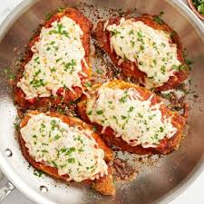

Chicken Parmesan

Description
This particular dish was developed by John Mitzewich and posted on allrecipes.com. Voted one of the best 2023 dishes on the site, it's recommended for chicken parmesan to be made in your own home. This is because you can choose how saucy or cheesy the chicken can be and still be freshy and juicy.
Ingredients
- 4 skinless, boneless chicken breast halves
- salt and freshly ground black pepper to taste
- 2 large eggs
- 1 cup panko bread crumbs, or more as needed
- ¾ cup grated Parmesan cheese, divided
- 2 tablespoons all-purpose flour, or more if needed
- ½ cup olive oil for frying, or as needed
- ½ cup prepared tomato sauce
- ¼ cup fresh mozzarella, cut into small cubes
- ¼ cup chopped fresh basil
- ½ cup grated provolone cheese
- 2 teaspoons olive oil
Steps
- Preheat an oven to 450 degrees F (230 degrees C).
- Pound the chicken breasts to an even thickness.
- Season the chicken breasts with salt and pepper.
- Dredge the chicken breasts in flour, then dip in beaten eggs, and coat with bread crumbs, let it rest for 15 minutes.
- Heat 1/2 inch olive oil in a large skillet on medium-high heat until it begins to shimmer. Cook chicken in the hot oil until golden, about 2 minutes per side. The chicken will finish cooking in the oven.
- Transfer chicken to a baking dish. Top each breast with 2 tablespoons tomato sauce. Layer each chicken breast with equal amounts of mozzarella cheese, fresh basil, and provolone cheese. Sprinkle remaining Parmesan over top and drizzle each with 1/2 teaspoon olive oil.
- Bake in the preheated oven until cheese is browned and bubbly and chicken breasts are no longer pink in the center, 15 to 20 minutes. An instant-read thermometer inserted into the center should read at least 165 degrees F (74 degrees C).